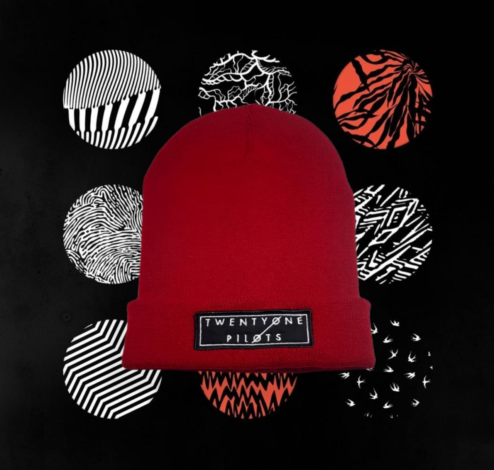
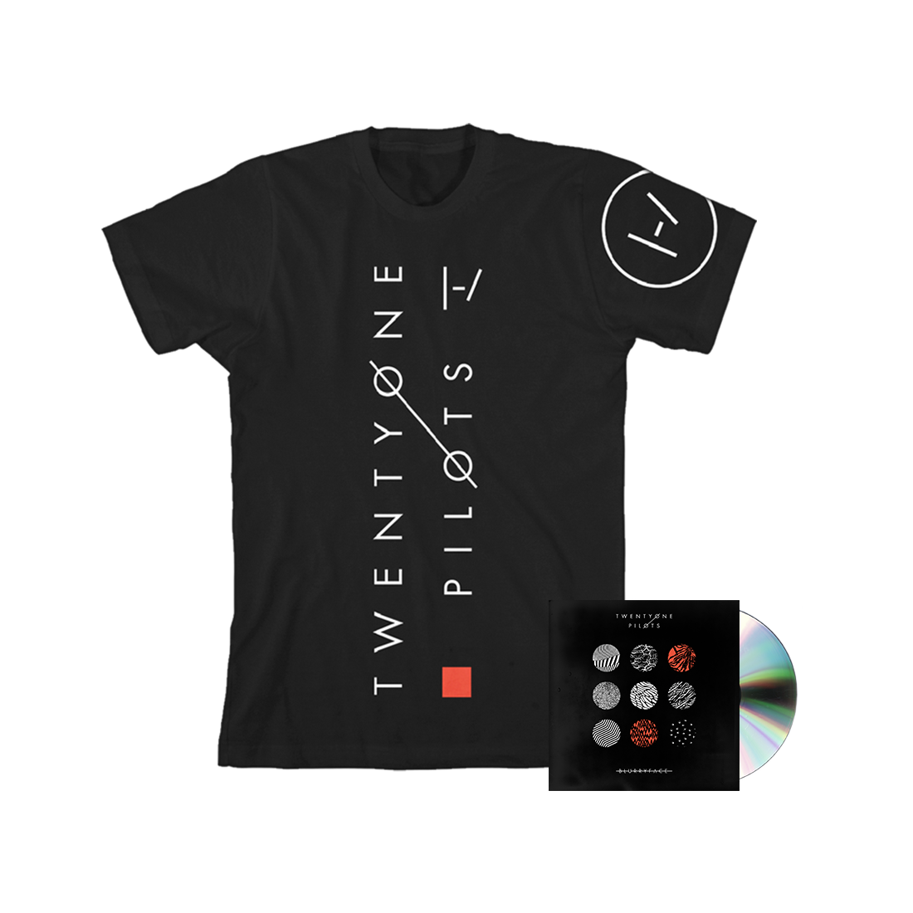
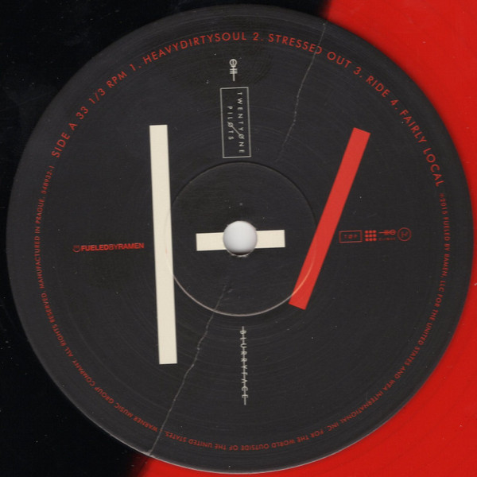

EL ALBÚM CONTIENE 14 CANCIONES, AL APRETAR EL NOMBRE LO DIRIGE A LA CANCION DE SU PLATAFORMA

GORRO TWENTY ONE PILOTS BLURRYFACE

- gorro de lana color rojo, bordado: twenty one pilots
BS 89.99
TWENTY ONE PILOTS BLURRYFACE POLERA NEGRA

- 100 % Algodón
- Made in USA
- Machine Wash
- 100% algodón.
- Corte clásico.
- Gráficos serigrafiados.
- Producto oficial.
BS 89.99

- Sello: Fueled By Ramen – 548932-1
Formato: 2 x Vinilo, LP, Album, Red Translucent & Black Split
- País: US
- Publicado: 31 jul 2015
- Género: Electronic, Hip Hop, Rock, Reggae, Pop
- Estilo: Alternative Rock, Indie Rock, Synth-pop, Indie Pop
BS 399.99